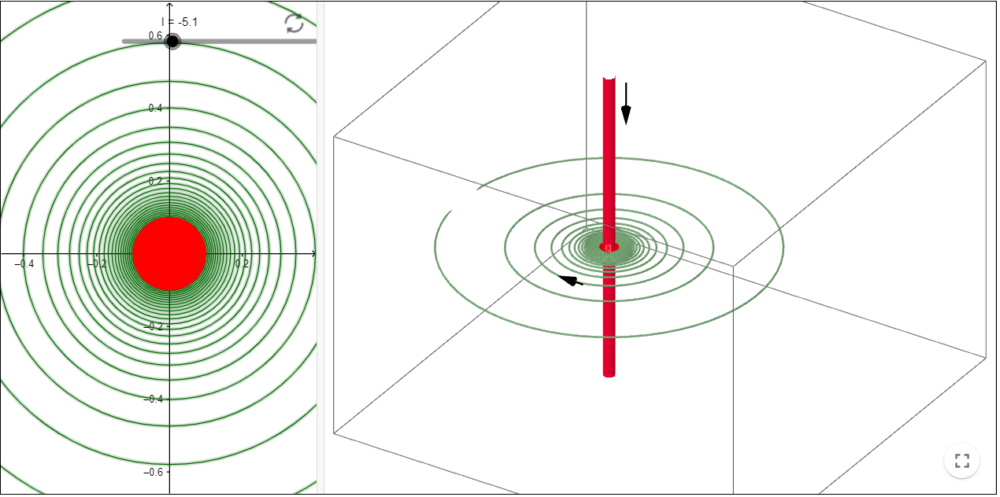
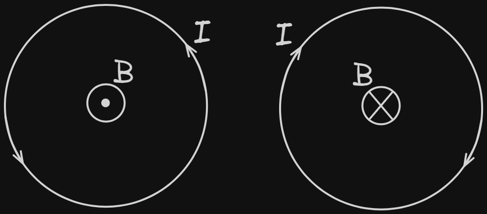
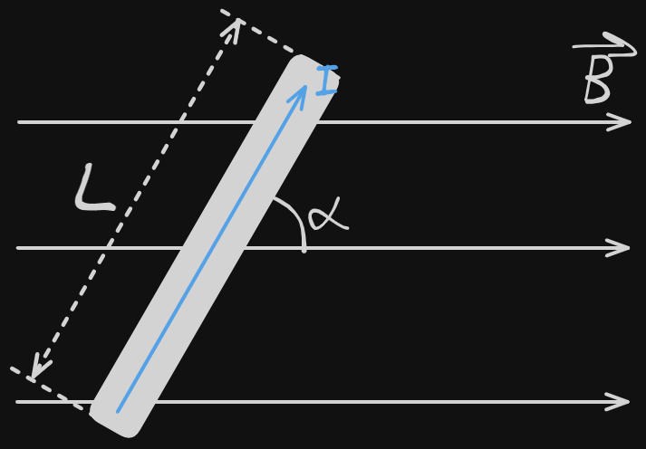
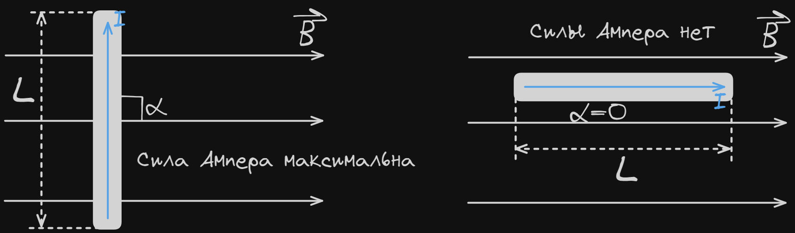
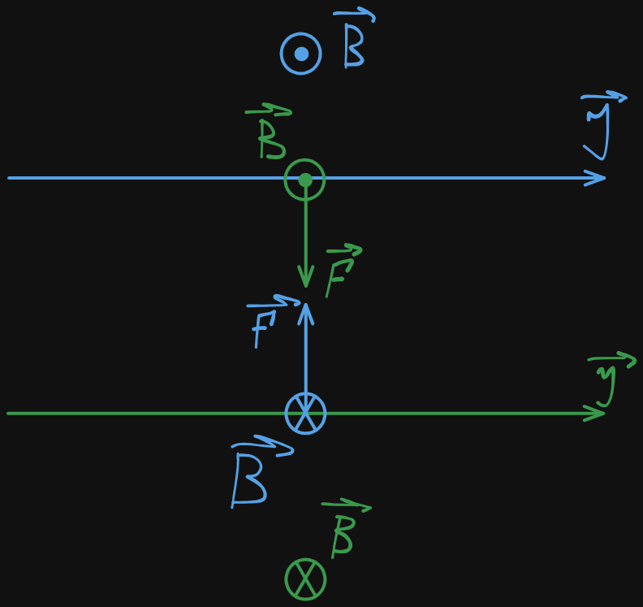
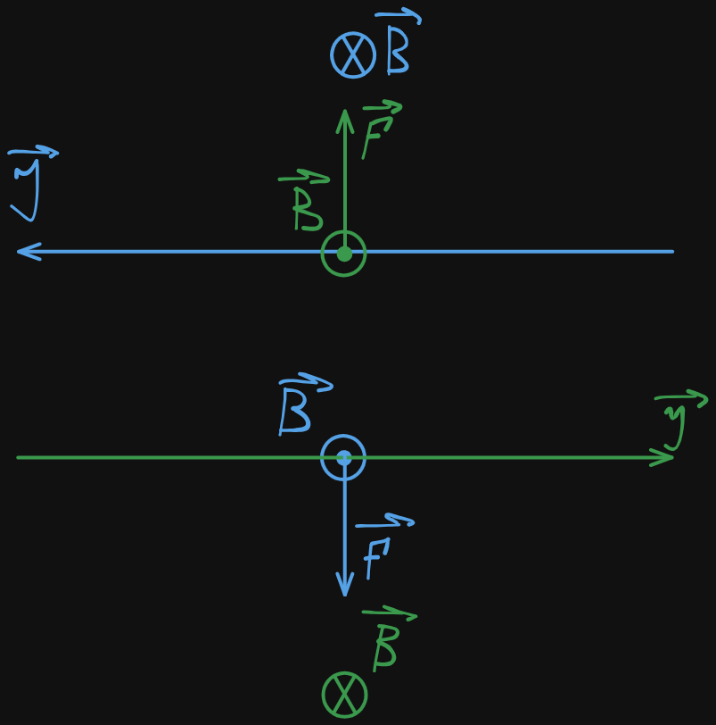
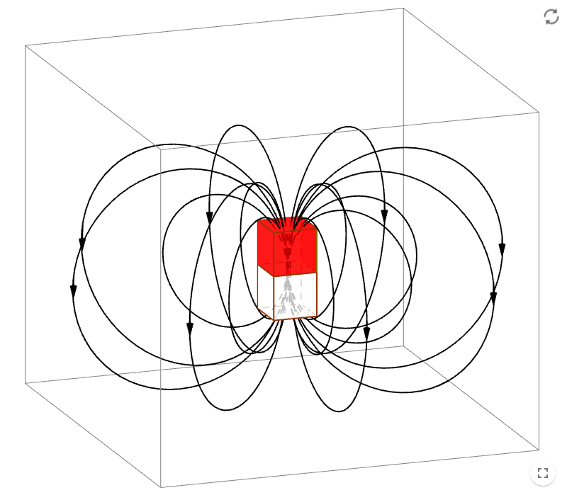

Связанные темы
Электрические и магнитные явления связаны, так как имеют общую природу ― электромагнитное поле. Движение электрических зарядов всегда создает магнитное поле, а магнитное поле, в свою очередь, всегда вызывает перемещение электрических зарядов.
Так как ток ― это направленное перемещение электрических зарядов, то протекание тока в проводнике всегда создает магнитное поле вокруг проводника.
Линии магнитного поля, которое создается проводниками с электрическим током.
Для изображения магнитных полей используют магнитные силовые линии ― линии, на которых модуль вектора магнитной индукции одинаков и равен , а сам вектор магнитной индукции направлен по касательной к линии. Линии магнитной индукции всегда замкнуты.
Для обозначения направлений движения тока и направлений магнитных силовых линий, помимо стрелок «вправо» → и «влево» ←, используются знаки «от нас» ― ⊗ или ⊕ (как торец оперения стрелы, летящей от нас), и «к нам» • или ⊙ (как острие летящей на нас стрелы).
Чтобы определить направление вектора магнитной индукции , которое создает ток, протекающий в прямом проводнике, используется правило правого винта: если представить, что вкручиваешь винт по направлению тока ― то направление вращения винта покажет направление вектора магнитной индукции.

Магнитное поле, которое создает ток в прямом проводнике, представляют собой концентрические окружности, лежащие в плоскости, перпендикулярной проводнику. При этом, некоторая область магнитного поля всегда направлена на нас, а другая ― от нас.
Чтобы определить направление вектора магнитной индукции , которое создает ток, в круговом проводнике или витках катушки, используется правило правого винта: если ток вращается по часовой стрелке, то магнитное поле будет направленно «от нас». Если ток течет против часовой стрелки, то ток будет направлен «на нас».
Правило правой руки: большой палец правой руки выставляем по направлению тока, тогда 4 оставшихся закручивающихся пальца показывают направление поля. Это правило инвертируемо.

Сила Ампера ― сила, действующая на проводник с током со стороны магнитного поля. Сила ампера равна
Где
― сила Ампера Н;
― сила тока в проводнике А;
― магнитная индукция Тл;
― длина проводника м;
― синус угла между проводником и вектором магнитной индукции.

Сила Ампера максимальна, если между проводником и вектором магнитной индукции угол равен = 90°, так как = sin90° = 1 и = sin90° = .
Если проводник расположен параллельно вектору магнитной индукции, т. е. = 0° ― сила Ампера отсутствует, так как = sin0° 0 и = sin0° = 0.

Направление силы Ампера определяется по правилу левой руки: если ладонь расположить так, чтобы линии магнитного поля входили в ладонь, а четыре пальца указывали направление тока ― то противопоставленный большой палец укажет направление силы Ампера.

Взаимодействие проводников с током
Ток, протекающий в проводнике, создает магнитное поле. Если рядом расположен еще один проводник, в котором протекает ток ― то второй проводник оказывается в магнитном поле, которое создает первый. На проводник в магнитном поле действует сила Ампера, в результате чего проводники с током или притягиваются, или отталкиваются друг от друга.
Пусть в проводниках 1 и 2 токи текут в одном направлении. Тогда первый проводник создает магнитное поле, направленное против часовой стрелки. В области, близлежащей к проводнику 2 это поле направлено перпендикулярно проводнику и от него. Согласно правилу левой руки, сила Ампера, которая действует со стороны магнитного поля, создаваемого проводником 1 на проводник с током 2, направлено в сторону проводника 1.
Проводник 2 действует на проводник 1 аналогично, и сила ампера, с которой магнитное поле проводника 2 действует на проводник 1 направлена в сторону проводника 2.
Таким образом, силы Ампера, с которым действуют проводники друг на друга ― и направлены навстречу друг другу и проводники притягиваются.
Пусть теперь ток в проводнике 2 течет в том же направлении, а ток в проводнике 1 ― в противоположном. Магнитное поле, которое создает проводник 1, будет направлено по часовой стрелке, а в ближайшей к проводнику 2 области ― на нас. Согласно правилу левой руки, такое магнитное поле создает силу Ампера, направленную от проводника 1.
Магнитное поле, которое создает проводник 2, будет направлено как в первом случае, но из-за того, что ток в проводнике 1 течет в противоположную сторону, сила Ампера будет направлена от проводника 2.
Силы Ампера, с которым действуют проводники друг на друга ― и направлены в разные стороны и проводники отталкиваются.


Сила Лоренца ― сила, действующая, на заряженную частицу, движущуюся в магнитном поле. Сила Лоренца равна (купил воды бомжу сына)
Где
― сила Лоренца Н;
― заряд частицы Кл;
― скорость частицы ]$;
― индукция магнитного поля Тл;
― угол, между вектором скорости частицы и вектором индукции магнитного поля.
Векторы силы Лоренца перпендикулярен вектору скорости частицы. Воздействуя, сила Лоренца изменяет только направление скорости, но не модуль.
Направление силы Лоренца для положительно заряженной частицы определяется по правилу левой руки: если левую руку расположить так, чтобы линии индукции магнитного поля входили в ладонь, а пальцы ― так, чтобы они указывали направление вектора скорости частицы, то противопоставленный большой палец укажет направление силы Лоренца.
Для отрицательно заряженной частицы (например, электрона) направление силы Лоренца определяется по правилу левой руки ― а затем изменяется на противоположное.
Магнитное поле постоянного магнита. Магниты обладают собственным магнитным полем. Силовые линии магнита выходят из северного магнитного полюса (N) и входят в южный магнитный полюс (S).

Магнитные поля двух магнитов взаимодействуют друг с другом, переориентируя магниты так, чтобы магнитные линии выходили из северного магнитного полюса и входили в ближайший южный магнитный полюс. При этом одинаковые полюса двух магнитов, отталкиваются, а разные ― притягиваются.